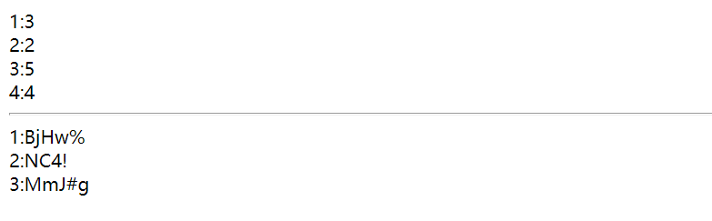
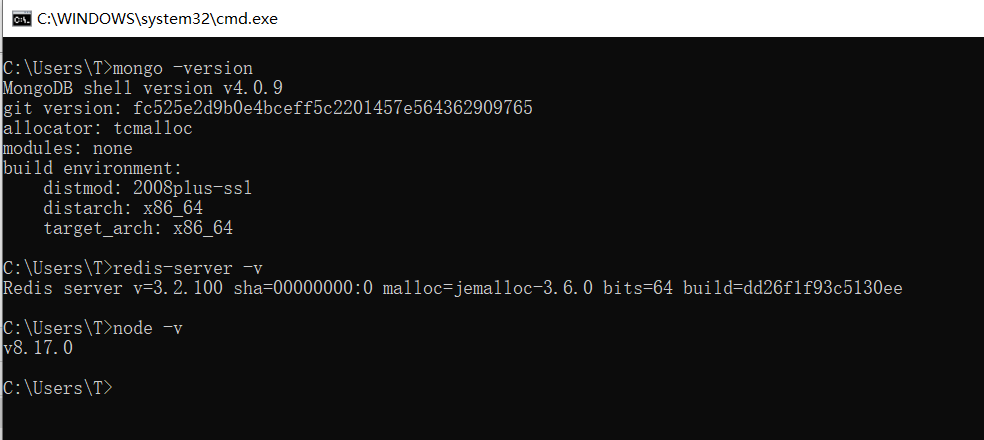
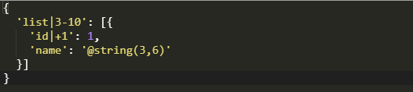
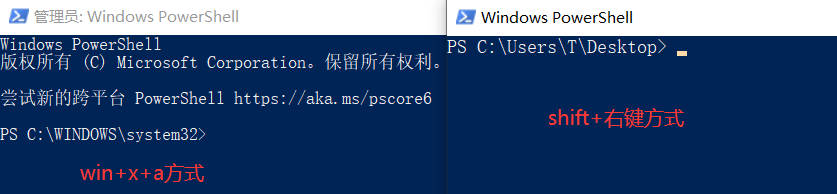
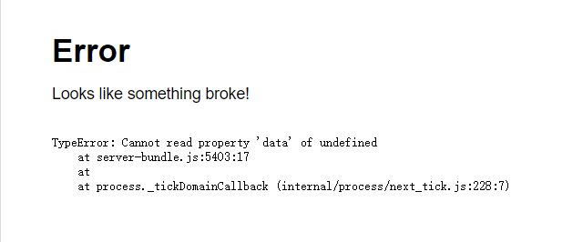
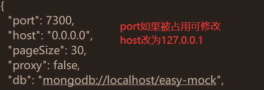

Mock
1.什么是mock.js
Mock.js是一款模拟数据生成器,旨在帮助前端工程师独立于后端进行开发,可以拦截ajax请求生成模拟数据进行接口测试,其模拟的数据有随机性,可以自行配置,支持的数据类型丰富,包括不限于文本,邮箱,图片,颜色等
官方文档很详细
2.入门使用
了解mock.js功能后,还需要结合项目使用,该示例在vue下
2.1测试
安装
npm install mockjs
在script标签中使用
// 使用 Mock
var Mock = require('mockjs')
var data = Mock.mock({
// 属性 list 的值是一个数组，其中含有 1 到 10 个元素
'list|1-10': [{
// 属性 id 是一个自增数，起始值为 1，每次增 1
'id|+1': 1
}]
})
// 输出结果 参数4为数据打印格式,空格
console.log(JSON.stringify(data, null, 4))
2.2全局使用
需要先安装axios和mockjs
npm install axios
npm install mockjs
在src下创建mock/mock.js文件
示例
// es6语法引入mock模块
import Mock from 'mockjs';
// 导出接口
export default Mock.mock(
'/api/get', {
'list|1-10':[{
'id|+1': 1,
'age|1-10': 10
}]
//还可以自定义其他数据
}
);
Mock.mock(
'/api/post', {
'list|3':[{
'number|+1': 1,
'string': '@string(3,5)'
}]
}
)
在main.js中全局引入
名字随便起,mock会自动拦截ajax请求
import mymock from './mock/mock.js';
创建vue文件并且使用
<template>
<div>
<div v-for="ele in list">:</div>
<hr>
<div v-for="ele in arr">:</div>
</div>
</template>
<script>
export default {
name: "MockDemo",
data() {
return {
list : [],
arr : [],
}
},
methods: {
async fun1(){
let {data} = await this.axios.get('/api/get')
this.list = data.list
},
async fun2(){
let {data} = await this.axios.post('/api/post')
this.arr = data.list
}
},
created() {
this.fun1()
this.fun2()
}
}
</script>
启动测试
npm run serve

3.使用EasyMock
采用自行搭建的方式
3.1 环境准备
环境准备,其中node版本可能需要使用8(从10降下来的)

克隆EasyMock并且安装依赖
$ git clone https://github.com/easy-mock/easy-mock.git
$ cd easy-mock && npm install
运行
npm run dev
默认端口7300,可以在config/default.json中修改配置
3.2 创建接口
注册账号登陆后,创建接口
自定义数据模板

3.3 在Vue中配合axios使用
默认路径配合axios的配置
在main.js指定请求路径前缀
import axios from 'axios'
// axios.defaults.baseURL='后端真实接口'
// 设置为下图的Base URL即可
axios.defaults.baseURL='http://localhost:7300/mock/5e684a733d64e467945f8c30/example'
methods: {
async fun(){
let {data} = await this.axios.get('/xxxServie')
console.log(data.list)
}
},
可以看到模拟数据和使用真实数据,只需要更改main.js中的axios的默认请求路径即可
mockjs会自动拦截请求
3.4 可能出现的问题
node的版本过高,需要使用8的版本
redis和mongo的环境变量设置
注册服务或者开启服务需要使用管理员命令窗口,有两种命令行可用
win+x+a
或者在文件夹中
shift+右键

EasyMock运行后报错,可以尝试修改其config/default.json中的
该错误可能是node8.9.4版本的错误

